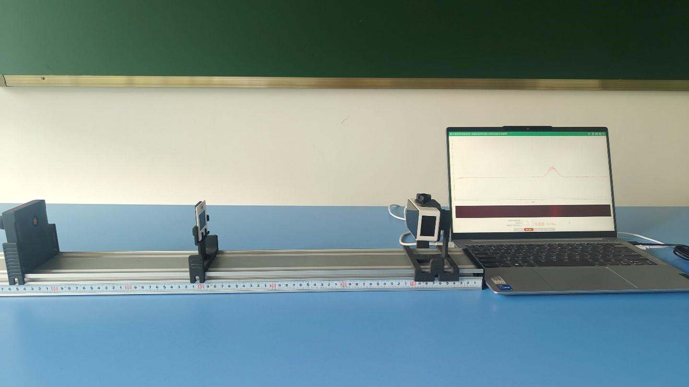
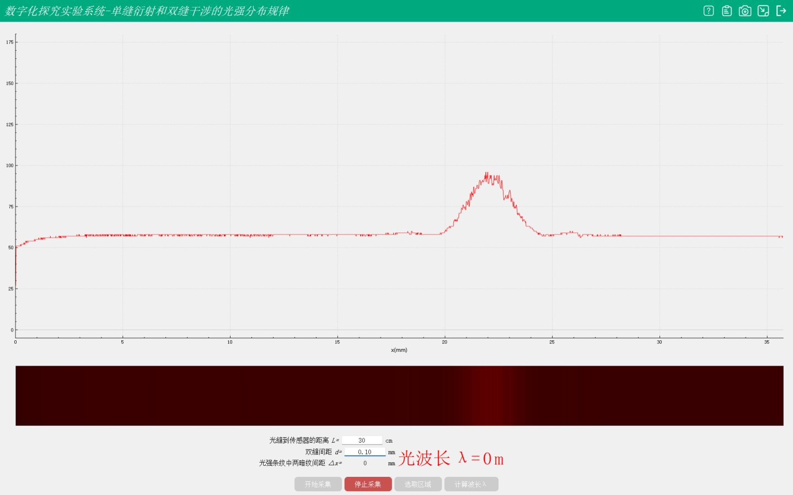
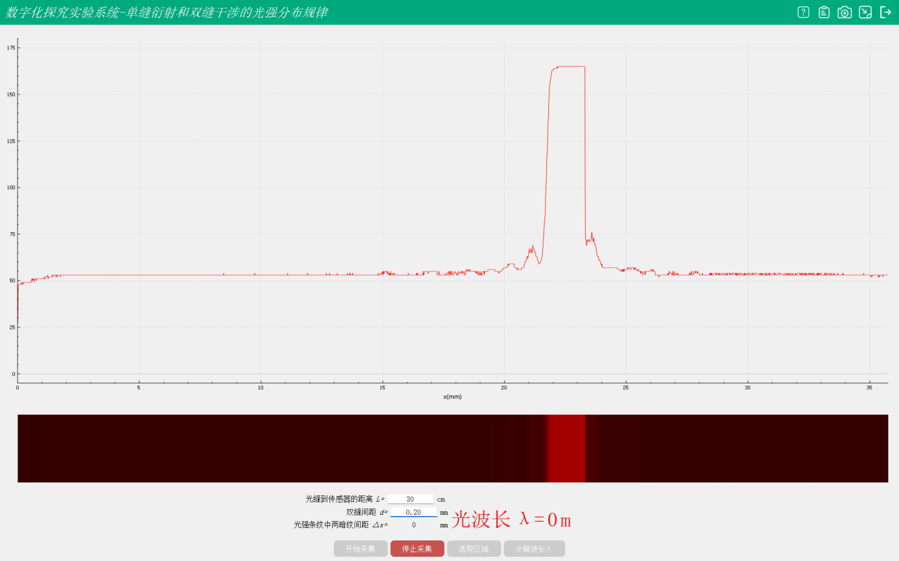

实验四十二 观察光的衍射现象
【实验目的】
探究光的衍射现象。
【实验原理】
光在传播过程中，遇到障碍物或小孔时，光将偏离直线传播的路径而绕到障碍物后面传播的现象，叫光的衍射。衍射条纹是平行不等距的，中央明条纹又宽又亮，两边条纹宽度变窄，亮度也明显减弱。
【实验器材】
数据采集器、光学系统、计算机等。
【实验装置】

【实验操作步骤】
1.将光学实验套件按装置图搭建好。
2.打开光源发射器，调整激光光束穿透过缝隙照射在相对光照度传感器的测量区域。
3.打开光强度的单双缝的光强分布专用软件，用数据线连接上相对光照度传感器，点击开始实验
4.通过调整单双缝的缝隙，得出实验结果。


【实验结论】
通过分析单缝衍射实验可得出：单缝缝宽越大，暗纹间距越大